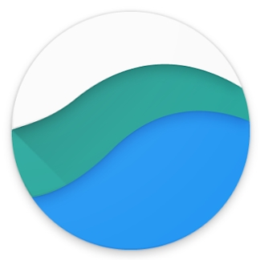

Latest trends and stories
Welcome to the end of digital marketing
Video - May 2019
How to bring your marketing mix modeling into the 21st century
Tutorial - June 2019

Think beyong the buy: Shopping is an omnichannel journey
Article - June 2019

The future of car buying online
Interactive Feature - May 2019
Organic research is elusive. It doesn't have to be
Case Study - May 2019
HBR Quik take: 7 questions every CMO wants to ask Google
Interview - May 2019
Take a deeper dive
Marketing Resources
Data Analytics & Measurement
User Experience & Design
Mobile
Omnichannel
Programmatic Advertising
Advertising Channels
Emerging & Assistive Technology
Search
Marketing on YouTube
Consumer Insights
Learn about consumer trends, from how people are using apps to video consumption on mobile.
Consumer Insights
Tools for marketers
Culture and Trends
I want to find out what my potential customers are engaging with and searching for.
Learn more
Competitive Analysis
I want to see how my brand compares against industry benchmarks.
Learn more
Consumer Insights
I want to make better decisions about my marketing campaigns and ad spending.
Learn more
Diagnostic Tools & Industry Benchmarks
I want to measure my brand's performance and get tips on improving key metrics.
Learn more